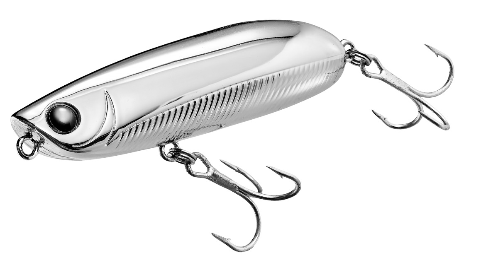
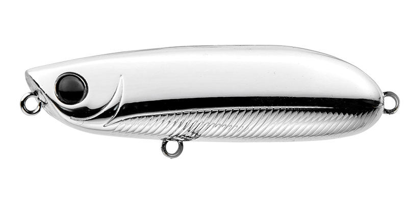
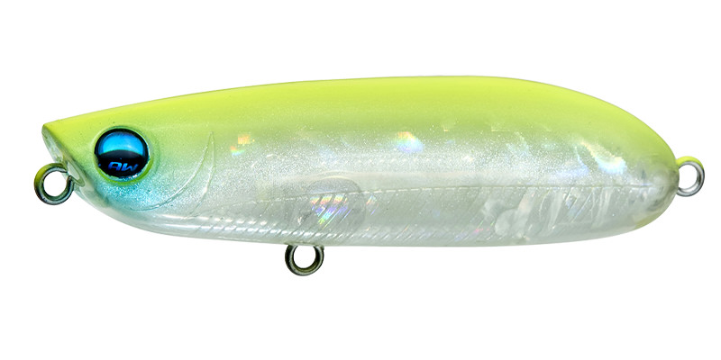
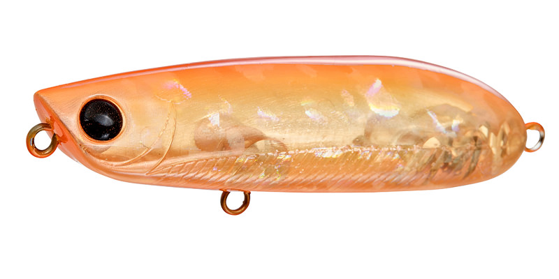
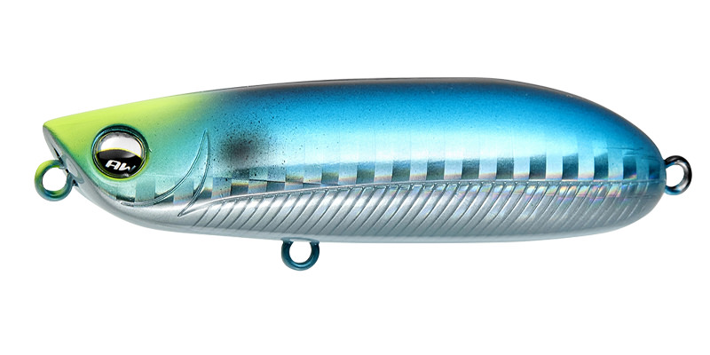

カーバンクル・リリー58F
（チヌ用ペンシルベイト）
カーバンクル・リリー58FはAQUAWAVE（アクアウェーブ）のチヌ用ペンシルベイトです。
58mmという小型サイズながら、驚異の飛距離と使いやすさを両立させた設計。平らなヘッド形状で水をしっかり押し、180度ターンや連続ショートダイブなどピッチの細かいアクションでチヌを誘います。

画像出典:AQUAWAVE公式HP
スペック
- メーカー
- AQUAWAVE（アクアウェーブ）
- タイプ
- ペンシルベイト
- 沈下タイプ
- フローティング
- 全長
- 58mm
- 自重
- 5g
- フック
- #10
- ターゲット
- チヌ（クロダイ）
- 価格
- 1,500円（税別）
▼今すぐチェック
カーバンクル・リリー58Fの特徴
小型ボディに凝縮した「驚異の飛距離」と、細かいピッチのダイブアクション
-
後方重心＋キャスティングシンカー型ボディで驚異の飛距離
58mmの小型サイズながら、飛行姿勢が安定するキャスティングシンカー型の形状と後方重心の恩恵で、優れた飛距離を実現している。
-
平らなヘッド形状で水をしっかり押す設計
平らなヘッドが水をしっかりと押すことで抵抗感が増し、操作性が向上。狙った通りにルアーをコントロールしやすい。
-
180度ターン・連続ショートダイブなど細かいピッチのアクション
ピッチの細かいダイブアクションを得意とし、引き波系アクションにも対応。ただ巻きでも安定した直線引き波を描く。
カーバンクル・リリー58Fの使い方
ただ巻きでは安定した直線的な引き波を描くため、まずはシンプルなただ巻きでチヌの反応を探るのが基本。
反応が薄い時は、ロッドワークで180度ターンや連続ショートダイブを織り交ぜ、細かいピッチのアクションで変化をつける。小型軽量ながら飛距離が出せる特性を活かして、遠くのカキ瀬やストラクチャー周りを広く探るのも有効です。
カーバンクル・リリー58Fの得意な状況
カキ瀬・堤防際・河口部など、チヌが表層を意識して捕食する状況が最大の出番。
小型軽量ながら飛距離を確保できるため、遠いストラクチャー際を手返しよく探りたい場面や、繊細な誘いで見せていきたいプレッシャーの高いフィールドでも選びたい1本です。
ワンポイント
反応が薄い時は、ただ巻きだけでなくロッドワークでピッチを変えたショートダイブを混ぜると、見切られにくくなります。
遠投が効くモデルなので、まず広範囲を探ってからチヌの反応があったレンジ・エリアを重点的に打ち返すと効率よく釣果につなげやすいです。
オススメカラー
カーバンクル・リリー58Fは全8色展開。状況に合わせて選びやすいオススメカラーを厳選して紹介します。

フルメッキシルバー（#A163）強い反射光でアピール力重視。澄み潮でもシルエットを見つけてもらいやすい。

チャートバックブルーチーク（#A181）濁り潮やローライト時でも視認性の高い高アピールカラー。

サンドオレンジ（#A219）マズメ時や濁り潮に強いオレンジ系。ナチュラルとアピールの中間で使いやすい。

イエローヘッドサーディン（#A222）イワシパターンをベースにしたナチュラル系。澄み潮のプレッシャーが高い場面向け。
画像出典:AQUAWAVE公式HP
カーバンクル・リリー58Fに似ているルアー
-
 チュパゾー60
BlueBlue
詳細はこちら＞
チュパゾー60
BlueBlue
詳細はこちら＞
全長60mm・自重7gのフローティングペンシルベイト。同じチヌ用の小型ペンシルとしてサイズ感が近く、選択肢が重なる1本。
-
 イネムン60
BlueBlue
詳細はこちら＞
イネムン60
BlueBlue
詳細はこちら＞
全長60mm・自重6gのトップウォータープラグ。同じクロダイ（チヌ）狙いの小型トップとして、状況に応じて使い分けたい1本。